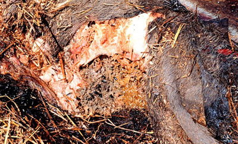

Pig Remains Infested by Blowflies

The information about insect colonization patterns or insect succession that forensic entomologists use to investigate homicide cases comes from data collected from scientific research studies. Because insect species and weather conditions vary from one climate to the next, research data from one geographic area (such as mixed boreal forest) cannot be applied to another geographic area (such as subtropical). Therefore, forensic entomologists use insect succession data that comes from the same geographic region as the region in which the body was found. Because homicide victims can be found in various geographic regions, numerous scientific research studies about insect succession must be completed to help forensic entomologists assist in criminal investigations. In 1996, the Canadian Police Research Centre (CPRC) began establishing a database that contains information about insect succession from each of the major biogeoclimatic zones in Canada.
One of the CPRC insect succession studies was completed in 1999 near Edmonton by Dr. Gail Anderson and Dr. Owen Beattie. The Edmonton area was chosen for this study because it is located within the mixed boreal forest zone, the biogeoclimatic zone with the highest human population in Alberta.
Instead of using human remains, pig carcasses from local farms and slaughterhouses were used to model humans. Pigs were used because their overall size and the position of their internal organs are similar to the human body. In another attempt to simulate how human remains may be found in forensic cases, some of the pig carcasses were dressed in human clothing. To prevent small animals such a coyotes from eating the dead pigs, they were covered with wire mesh.
To simulate further various conditions in which human remains may be found in a forensic investigation, the pig remains were studied in eight different types of conditions: sun, shade, spring and summer, autumn and winter, partially buried, and completely buried.
Sun vs. Shade
When forensic entomologists compared the decomposition of several pig carcasses left in the sun with several pig carcasses left in the shade, the following were discovered:
Spring and Summer vs. Autumn and Winter
When researchers compared the decomposition of several dead pigs during the spring and summer with several dead pigs during the autumn and winter, the following were observed:
Partially Buried vs. Completely Buried
Some of the pig bodies were left on the ground and partially buried under tree branches while several other pig bodies were completely buried in graves 20-30 cm deep. When scientists compared the decomposition of the partially buried pigs with the decomposition of the completely buried pigs, the following were noted:
Murder is unique in that it abolishes the party it injures, so that society has to take the place of the victim and on his behalf demand atonement or grant forgiveness. It is the one crime in which society has a direct interest.